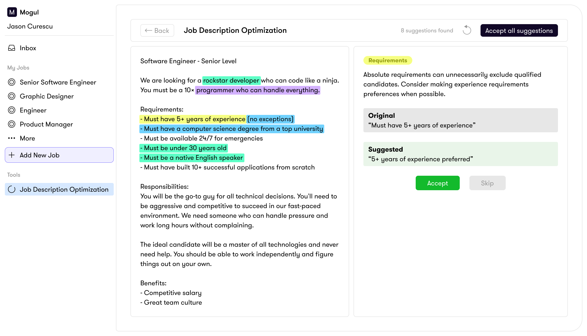

AI Job Description Enhancer
- Identified user need through Client Success feedback
- Collaborated with product team on priorities and scope
- Used AI tools to explore layouts and estimate effort
- Designed and built a working prototype independently using Cursor
- Tested prototype live with clients through Client Success
- Iterated based on real client feedback before launch
- Shipped to clients as a live tool in the Mogul Recruiter
- Prototype built independently without engineering support
- Validated directly with clients through live testing on calls
- Client feedback shaped the final version before launch
Bad job descriptions cost companies money, waste recruiter time, and turn away great candidates. Our Client Success team kept hearing the same thing from clients: their job descriptions and recruiting messages were inconsistent, unclear, and often unintentionally exclusionary. This was leading to poor applicant quality, low response rates, and slower hiring overall.
When something gets mentioned enough times by clients, Client Success brings it to the product team. This was one of those features. We added it to our backlog and decided to revisit it when we had more time.
The difference between a bad job description and a good one is huge. A bad one uses vague language, buzzword soup, intimidating tone, and a wish list of requirements that scares people off. A good one is clear, specific, explains the actual work and why it matters, and uses focused requirements that don't filter out strong candidates unnecessarily. Most companies don't realize their job descriptions are working against them.
I started by talking with our Client Success team to understand what clients were actually asking for and where their biggest pain points were. From there, I worked with the product team to align on priorities, identify gaps, and figure out how much time we wanted to invest.
Once we had a clear direction, I used Claude to explore different layout options for the tool and estimate development effort. This let me quickly work through questions about how the tool should be structured and what the flow should feel like, without needing to pull in the engineering team right away.
From those explorations, I sketched out breadboards that mapped the core user journey. The idea was simple: a recruiter pastes in their job description, the tool analyzes it and highlights areas that need improvement, and they work through the suggestions at their own pace.
This is where things got interesting. I wanted to test what I could accomplish using AI tools on my own, without leaning on the engineering team. I took my breadboard ideas and wrote a prompt in Cursor to help me build a working prototype.
It was a game changer. I was able to move really fast, test ideas, and iterate on the fly. Instead of waiting for engineering bandwidth or putting together a spec and handing it off, I had a functional prototype I could put in front of real users. This is the kind of thing that would have taken weeks in a traditional workflow, and I was able to do it independently.
The tool analyzes a pasted job description and highlights suggestions across four categories. Recruiters can review each one individually, accept or reject changes, and watch their job description improve in real time.
- Lead and mentor a team of engineers to crush their sprint goalsClarityUnclear and informal. Try "meet sprint commitments" or "hit delivery milestones."
- Interface with stakeholders and drive technical strategyToneConsider "develop and communicate technical strategy" to sound more collaborative than directive.
- Partner closely with product and design
- 10+ years of software engineering experienceRequirementsThis may filter out strong candidates. Consider "5+ years" or focus on specific skills instead of years.
- Must haveexcellent written and verbal communicationTone"Must have" reads as demanding. Try "strong" or "demonstrated" to set a more welcoming tone.
- Bachelor's degree required (Master's preferred)RequirementsDegree requirements can limit diversity. Consider "or equivalent practical experience."
- Must be a team playerwho is passionate about excellenceInclusive languageThis phrase is subjective and hard to define. Focus on specific collaborative behaviors instead.
Purple highlights flag clarity issues: vague language, buzzwords, and sections that don't clearly communicate what the role actually involves.
Blue highlights flag inclusive language: wording that could unintentionally discourage certain candidates from applying, with more welcoming alternatives suggested.
Yellow highlights flag requirements: inflated or unnecessary criteria that might be filtering out strong candidates who could do the job.
Green highlights flag tone: adjustments that make the overall description more approachable and human.
Once I had a working prototype, I sent it to our Client Success team. Instead of running a traditional usability test, they did something better: they tested it live during client calls with the exact clients who had originally requested this kind of tool.
The reaction was really positive. Clients were excited to actually test out a feature and give direct feedback. It also gave us a clear picture of what needed to change before we built the final version.
We implemented all the changes that came out of client testing. The final version was more polished than the prototype, but the prototype had already nailed the flow, the core functionality, and the features that mattered most. The client feedback mostly shaped the details and the experience around the edges.
The tool shipped as part of the Mogul Recruiter, living in the Tools section where recruiters could use it alongside their sourcing and outreach workflow.

This project changed how I think about prototyping. Being able to go from sketches to a working prototype on my own, using AI tools like Claude and Cursor, meant I didn't have to wait for engineering time to validate an idea. I could test a concept with real users and come to the engineering team with a validated direction and real feedback instead of just a spec. That's a fundamentally different conversation, and it leads to better products shipping faster.